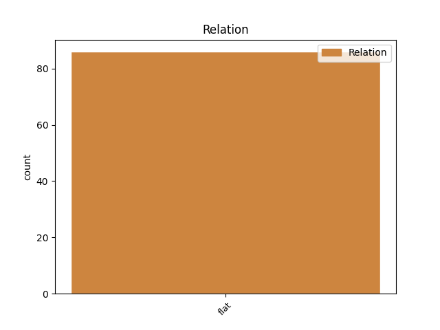
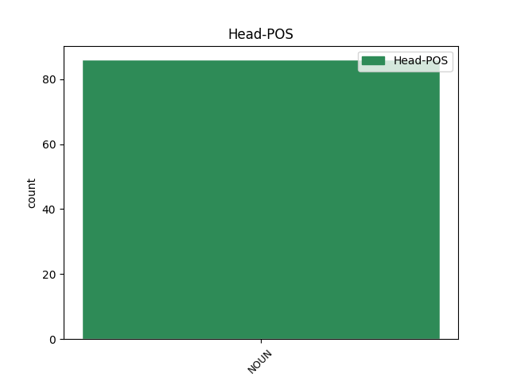

Distribution of features within this leaf


Agreement Rules sorted by frequency.
- When the dependent token is the flat multiword expression(flat) of the head token, and the head token is NOUN and the dependent token is PROPN.
1 Tá _ _ _ _ 0 _ _ _
2 an _ _ _ _ 0 _ _ _
3 báchrán _ _ _ _ 0 _ _ _
4 an-searbh _ _ _ _ 0 _ _ _
5 le _ _ _ _ 0 _ _ _
6 hól _ _ _ _ 0 _ _ _
7 .. _ _ _ _ 0 _ _ _
8 Tá _ _ _ _ 0 _ _ _
9 an _ _ _ _ 0 _ _ _
10 Chomhairle _ _ _ _ 0 _ _ _
11 seo _ _ _ _ 0 _ _ _
12 ar _ _ _ _ 0 _ _ _
13 cheann _ _ _ _ 0 _ _ _
14 de _ _ _ _ 0 _ _ _
15 na _ _ _ _ 0 _ _ _
16 naoi _ _ _ _ 0 _ _ _
17 gcomhpháirtí _ _ _ _ 0 _ _ _
18 NASC _ _ _ _ 0 _ _ _
19 - _ _ _ _ 0 _ _ _
20 is _ _ _ _ 0 _ _ _
21 iad _ _ _ _ 0 _ _ _
22 na _ _ _ _ 0 _ _ _
23 cinn _ _ _ _ 0 _ _ _
24 eile _ _ _ _ 0 _ _ _
25 ná _ _ _ _ 0 _ _ _
26 : _ _ _ _ 0 _ _ _
27 Comhairlí _ _ _ _ 0 _ _ _
28 Contae contae NOUN Noun Case=Gen|Gender=Masc|Number=Sing 0 _ _ _
29 Chorcaigh Corcaigh PROPN Noun Case=Gen|Form=Len|Gender=Masc|Number=Sing 28 flat _ SpaceAfter=No
30 , _ _ _ _ 0 _ _ _
31 Dhún _ _ _ _ 0 _ _ _
32 na _ _ _ _ 0 _ _ _
33 nGall _ _ _ _ 0 _ _ _
34 , _ _ _ _ 0 _ _ _
35 Mhaigh _ _ _ _ 0 _ _ _
36 Eo _ _ _ _ 0 _ _ _
37 agus _ _ _ _ 0 _ _ _
38 Chiarraí _ _ _ _ 0 _ _ _
39 , _ _ _ _ 0 _ _ _
40 Comhairle _ _ _ _ 0 _ _ _
41 Chathair _ _ _ _ 0 _ _ _
42 na _ _ _ _ 0 _ _ _
43 Gaillimhe _ _ _ _ 0 _ _ _
44 , _ _ _ _ 0 _ _ _
45 Ollscoil _ _ _ _ 0 _ _ _
46 na _ _ _ _ 0 _ _ _
47 hÉireann _ _ _ _ 0 _ _ _
48 i _ _ _ _ 0 _ _ _
49 nGaillimh _ _ _ _ 0 _ _ _
50 , _ _ _ _ 0 _ _ _
51 Údarás _ _ _ _ 0 _ _ _
52 na _ _ _ _ 0 _ _ _
53 Gaeltachta _ _ _ _ 0 _ _ _
54 agus _ _ _ _ 0 _ _ _
55 Údarás _ _ _ _ 0 _ _ _
56 Réigiúnach _ _ _ _ 0 _ _ _
57 an _ _ _ _ 0 _ _ _
58 Iarthair _ _ _ _ 0 _ _ _
59 . _ _ _ _ 0 _ _ _
1 1992 _ _ _ _ 0 _ _ _
2 : _ _ _ _ 0 _ _ _
3 D' _ _ _ _ 0 _ _ _
4 fhógair _ _ _ _ 0 _ _ _
5 preasoifig _ _ _ _ 0 _ _ _
6 na _ _ _ _ 0 _ _ _
7 hEaglaise eaglais NOUN Noun Case=Gen|Definite=Def|Gender=Fem|Number=Sing 0 _ _ _
8 Caitlicí Caitliceach ADJ Adj Case=Gen|Gender=Fem|Number=Sing 7 flat _ _
9 go _ _ _ _ 0 _ _ _
10 raibh _ _ _ _ 0 _ _ _
11 Easpag _ _ _ _ 0 _ _ _
12 na _ _ _ _ 0 _ _ _
13 Gaillimhe _ _ _ _ 0 _ _ _
14 , _ _ _ _ 0 _ _ _
15 Éamonn _ _ _ _ 0 _ _ _
16 Casey _ _ _ _ 0 _ _ _
17 , _ _ _ _ 0 _ _ _
18 i _ _ _ _ 0 _ _ _
19 ndiaidh _ _ _ _ 0 _ _ _
20 éirí _ _ _ _ 0 _ _ _
21 as _ _ _ _ 0 _ _ _
22 de _ _ _ _ 0 _ _ _
23 thairbhe _ _ _ _ 0 _ _ _
24 ' _ _ _ _ 0 _ _ _
25 cúiseanna _ _ _ _ 0 _ _ _
26 pearsanta _ _ _ _ 0 _ _ _
27 ' _ _ _ _ 0 _ _ _
28 . _ _ _ _ 0 _ _ _
1 Tá _ _ _ _ 0 _ _ _
2 sé _ _ _ _ 0 _ _ _
3 briste _ _ _ _ 0 _ _ _
4 as _ _ _ _ 0 _ _ _
5 a _ _ _ _ 0 _ _ _
6 phost _ _ _ _ 0 _ _ _
7 gan _ _ _ _ 0 _ _ _
8 tuilleadh _ _ _ _ 0 _ _ _
9 moille _ _ _ _ 0 _ _ _
10 mar _ _ _ _ 0 _ _ _
11 gheall _ _ _ _ 0 _ _ _
12 ar _ _ _ _ 0 _ _ _
13 cheist _ _ _ _ 0 _ _ _
14 polasaí _ _ _ _ 0 _ _ _
15 atá _ _ _ _ 0 _ _ _
16 leagtha _ _ _ _ 0 _ _ _
17 síos _ _ _ _ 0 _ _ _
18 ag _ _ _ _ 0 _ _ _
19 eagraíocht _ _ _ _ 0 _ _ _
20 nach _ _ _ _ 0 _ _ _
21 bhfuil _ _ _ _ 0 _ _ _
22 ceaptha _ _ _ _ 0 _ _ _
23 ag _ _ _ _ 0 _ _ _
24 an _ _ _ _ 0 _ _ _
25 Stát _ _ _ _ 0 _ _ _
26 ná _ _ _ _ 0 _ _ _
27 ag _ _ _ _ 0 _ _ _
28 aon _ _ _ _ 0 _ _ _
29 eagraíocht _ _ _ _ 0 _ _ _
30 Stáit _ _ _ _ 0 _ _ _
31 .i. _ _ _ _ 0 _ _ _
32 An _ _ _ _ 0 _ _ _
33 Foras _ _ _ _ 0 _ _ _
34 Pátrúnachta _ _ _ _ 0 _ _ _
35 , _ _ _ _ 0 _ _ _
36 dream _ _ _ _ 0 _ _ _
37 nach _ _ _ _ 0 _ _ _
38 bhfuil _ _ _ _ 0 _ _ _
39 d' _ _ _ _ 0 _ _ _
40 údarás _ _ _ _ 0 _ _ _
41 acu _ _ _ _ 0 _ _ _
42 labhairt _ _ _ _ 0 _ _ _
43 thar _ _ _ _ 0 _ _ _
44 ceann _ _ _ _ 0 _ _ _
45 na _ _ _ _ 0 _ _ _
46 Roinne _ _ _ _ 0 _ _ _
47 Oideachais _ _ _ _ 0 _ _ _
48 , _ _ _ _ 0 _ _ _
49 thar _ _ _ _ 0 _ _ _
50 ceann _ _ _ _ 0 _ _ _
51 Gaelscoileanna _ _ _ _ 0 _ _ _
52 ná _ _ _ _ 0 _ _ _
53 thar _ _ _ _ 0 _ _ _
54 ceann _ _ _ _ 0 _ _ _
55 Foras foras NOUN Noun Case=Gen|Gender=Masc|NounType=Weak|Number=Plur 0 _ _ _
56 na na DET Art Case=Gen|Definite=Def|Gender=Fem|Number=Sing|PronType=Art 55 flat _ _
57 Gaeilge _ _ _ _ 0 _ _ _
58 ' _ _ _ _ 0 _ _ _
59 , _ _ _ _ 0 _ _ _
60 a _ _ _ _ 0 _ _ _
61 deir _ _ _ _ 0 _ _ _
62 an _ _ _ _ 0 _ _ _
63 tUas _ _ _ _ 0 _ _ _
64 Ó _ _ _ _ 0 _ _ _
65 Cuinneagáin _ _ _ _ 0 _ _ _
66 . _ _ _ _ 0 _ _ _
Disagree Examples:
1 ' _ _ _ _ 0 _ _ _
2 Seirbhísí _ _ _ _ 0 _ _ _
3 Sóisialta _ _ _ _ 0 _ _ _
4 don _ _ _ _ 0 _ _ _
5 Chainteoir cainteoir NOUN Noun Case=NomAcc|Form=Len|Gender=Masc|Number=Sing 0 _ _ _
6 Gaeilge Gaeilge PROPN Noun Case=Gen|Gender=Fem|Number=Sing 5 flat _ _
7 / _ _ _ _ 0 _ _ _
8 Dátheangach _ _ _ _ 0 _ _ _
9 ' _ _ _ _ 0 _ _ _
10 a _ _ _ _ 0 _ _ _
11 bhí _ _ _ _ 0 _ _ _
12 mar _ _ _ _ 0 _ _ _
13 théama _ _ _ _ 0 _ _ _
14 ag _ _ _ _ 0 _ _ _
15 an _ _ _ _ 0 _ _ _
16 siompóisiam _ _ _ _ 0 _ _ _
17 , _ _ _ _ 0 _ _ _
18 a _ _ _ _ 0 _ _ _
19 d' _ _ _ _ 0 _ _ _
20 eagraigh _ _ _ _ 0 _ _ _
21 Comhdháil _ _ _ _ 0 _ _ _
22 Náisiúnta _ _ _ _ 0 _ _ _
23 na _ _ _ _ 0 _ _ _
24 Gaeilge _ _ _ _ 0 _ _ _
25 . _ _ _ _ 0 _ _ _
1 ' _ _ _ _ 0 _ _ _
2 Seirbhísí _ _ _ _ 0 _ _ _
3 Sóisialta _ _ _ _ 0 _ _ _
4 don _ _ _ _ 0 _ _ _
5 Chainteoir _ _ _ _ 0 _ _ _
6 Gaeilge _ _ _ _ 0 _ _ _
7 / _ _ _ _ 0 _ _ _
8 Dátheangach _ _ _ _ 0 _ _ _
9 ' _ _ _ _ 0 _ _ _
10 a _ _ _ _ 0 _ _ _
11 bhí _ _ _ _ 0 _ _ _
12 mar _ _ _ _ 0 _ _ _
13 théama _ _ _ _ 0 _ _ _
14 ag _ _ _ _ 0 _ _ _
15 an _ _ _ _ 0 _ _ _
16 siompóisiam _ _ _ _ 0 _ _ _
17 , _ _ _ _ 0 _ _ _
18 a _ _ _ _ 0 _ _ _
19 d' _ _ _ _ 0 _ _ _
20 eagraigh _ _ _ _ 0 _ _ _
21 Comhdháil comhdháil NOUN Noun Case=NomAcc|Gender=Fem|Number=Sing 0 _ _ _
22 Náisiúnta _ _ _ _ 0 _ _ _
23 na na DET Art Case=Gen|Definite=Def|Gender=Fem|Number=Sing|PronType=Art 21 flat _ _
24 Gaeilge _ _ _ _ 0 _ _ _
25 . _ _ _ _ 0 _ _ _
1 ' _ _ _ _ 0 _ _ _
2 Seirbhísí _ _ _ _ 0 _ _ _
3 Sóisialta _ _ _ _ 0 _ _ _
4 don _ _ _ _ 0 _ _ _
5 Chainteoir _ _ _ _ 0 _ _ _
6 Gaeilge _ _ _ _ 0 _ _ _
7 / _ _ _ _ 0 _ _ _
8 Dátheangach _ _ _ _ 0 _ _ _
9 ' _ _ _ _ 0 _ _ _
10 a _ _ _ _ 0 _ _ _
11 bhí _ _ _ _ 0 _ _ _
12 mar _ _ _ _ 0 _ _ _
13 théama _ _ _ _ 0 _ _ _
14 ag _ _ _ _ 0 _ _ _
15 an _ _ _ _ 0 _ _ _
16 siompóisiam _ _ _ _ 0 _ _ _
17 , _ _ _ _ 0 _ _ _
18 a _ _ _ _ 0 _ _ _
19 d' _ _ _ _ 0 _ _ _
20 eagraigh _ _ _ _ 0 _ _ _
21 Comhdháil comhdháil NOUN Noun Case=NomAcc|Gender=Fem|Number=Sing 0 _ _ _
22 Náisiúnta _ _ _ _ 0 _ _ _
23 na _ _ _ _ 0 _ _ _
24 Gaeilge Gaeilge PROPN Noun Case=Gen|Definite=Def|Gender=Fem|Number=Sing 21 flat _ SpaceAfter=No
25 . _ _ _ _ 0 _ _ _
1 Luigh _ _ _ _ 0 _ _ _
2 sé _ _ _ _ 0 _ _ _
3 go _ _ _ _ 0 _ _ _
4 dian _ _ _ _ 0 _ _ _
5 leis _ _ _ _ 0 _ _ _
6 an _ _ _ _ 0 _ _ _
7 staidéar _ _ _ _ 0 _ _ _
8 agus _ _ _ _ 0 _ _ _
9 bhain _ _ _ _ 0 _ _ _
10 sé _ _ _ _ 0 _ _ _
11 amach _ _ _ _ 0 _ _ _
12 céim _ _ _ _ 0 _ _ _
13 B.A. _ _ _ _ 0 _ _ _
14 Maidir _ _ _ _ 0 _ _ _
15 leis _ _ _ _ 0 _ _ _
16 an _ _ _ _ 0 _ _ _
17 damhsóir _ _ _ _ 0 _ _ _
18 bhí _ _ _ _ 0 _ _ _
19 cuma _ _ _ _ 0 _ _ _
20 ainnis _ _ _ _ 0 _ _ _
21 air _ _ _ _ 0 _ _ _
22 agus _ _ _ _ 0 _ _ _
23 bhí _ _ _ _ 0 _ _ _
24 an _ _ _ _ 0 _ _ _
25 oiread _ _ _ _ 0 _ _ _
26 cótaí _ _ _ _ 0 _ _ _
27 air _ _ _ _ 0 _ _ _
28 a _ _ _ _ 0 _ _ _
29 chlúdódh _ _ _ _ 0 _ _ _
30 Coláiste coláiste NOUN Noun Case=NomAcc|Gender=Masc|Number=Sing 0 _ _ _
31 na na DET Art Case=Gen|Definite=Def|Gender=Fem|Number=Sing|PronType=Art 30 flat _ _
32 Tríonóide _ _ _ _ 0 _ _ _
33 . _ _ _ _ 0 _ _ _
1 ' _ _ _ _ 0 _ _ _
2 Fostaíodh _ _ _ _ 0 _ _ _
3 Comhairleoirí comhairleoir NOUN Noun Case=NomAcc|Gender=Masc|Number=Plur 0 _ _ _
4 Gaeilge Gaeilge PROPN Noun Case=Gen|Gender=Fem|Number=Sing 3 flat _ _
5 ar _ _ _ _ 0 _ _ _
6 chonradh _ _ _ _ 0 _ _ _
7 dhá _ _ _ _ 0 _ _ _
8 bhliain _ _ _ _ 0 _ _ _
9 i _ _ _ _ 0 _ _ _
10 gcuid _ _ _ _ 0 _ _ _
11 de _ _ _ _ 0 _ _ _
12 na _ _ _ _ 0 _ _ _
13 Bordcheantair _ _ _ _ 0 _ _ _
14 cheana _ _ _ _ 0 _ _ _
15 féin _ _ _ _ 0 _ _ _
16 ach _ _ _ _ 0 _ _ _
17 ceapann _ _ _ _ 0 _ _ _
18 Comhar _ _ _ _ 0 _ _ _
19 go _ _ _ _ 0 _ _ _
20 bhfuil _ _ _ _ 0 _ _ _
21 géarghá _ _ _ _ 0 _ _ _
22 le _ _ _ _ 0 _ _ _
23 Comhairleoir _ _ _ _ 0 _ _ _
24 Gaeilge _ _ _ _ 0 _ _ _
25 lánaimseartha _ _ _ _ 0 _ _ _
26 in _ _ _ _ 0 _ _ _
27 achan _ _ _ _ 0 _ _ _
28 Bhordcheantar _ _ _ _ 0 _ _ _
29 sa _ _ _ _ 0 _ _ _
30 Tuaisceart _ _ _ _ 0 _ _ _
31 sa _ _ _ _ 0 _ _ _
32 dóigh _ _ _ _ 0 _ _ _
33 is _ _ _ _ 0 _ _ _
34 go _ _ _ _ 0 _ _ _
35 mbeidh _ _ _ _ 0 _ _ _
36 leanúnachas _ _ _ _ 0 _ _ _
37 san _ _ _ _ 0 _ _ _
38 obair _ _ _ _ 0 _ _ _
39 . _ _ _ _ 0 _ _ _